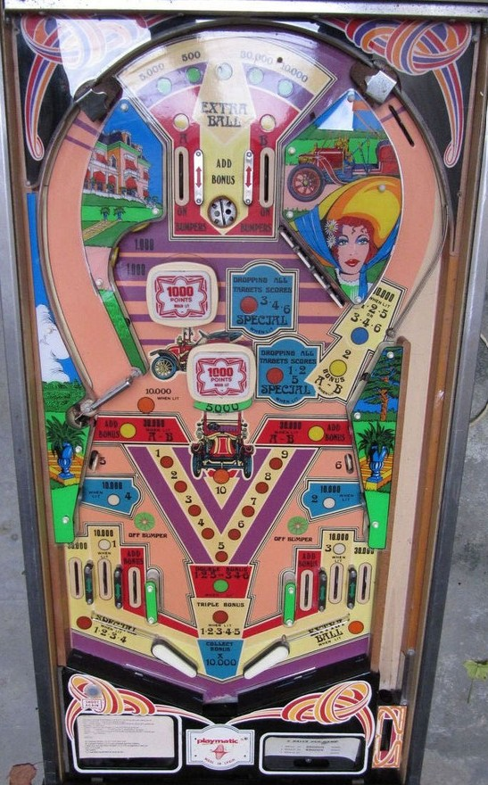

Not to be confused with Party Animal (Bally, 1987), Elvira and the Party Monsters (Bally, 1989), The Party Zone (Bally Williams, 1991), or The Simpsons Pinball Party (Stern Pinball, 2003).
Shoot drop targets to earn bonus multipliers: 1-2-3-4 are in the upper right, 5 is in the lower left, and 6 is in the lower right. Completing 1-2-5 or 3-4-6 awards 2x bonus, and completing them all awards 3x. Bonus is advanced by the top saucer, near in lanes, and red standup targets in the lower left and right. Bonus advances are worth 10,000 each. Completing the 1, 2, 3, or 4 drop targets each lights one of the blue lower side targets or far out lanes for 10,000 points instead of 500.
The below picture of Party's playfield was taken from the Internet Pinball Database, where it was originally provided by Michel Maignault.

The top saucer scans between 5 values: 500, 5,000, 10,000, or 30,000 points, or Extra Ball. Landing in the saucer awards 1 bonus advance plus whichever score value is lit. Landing in this saucer when Extra Ball is lit does not award an extra ball directly; rather, it lights an extra ball that must be collected at the right out lane.
The top lanes score 500 points and light the pop bumpers to score 1,000 points instead of 100. Making a top lane lights it (A+B). Collecting both A and B lights the red standup targets in the lower left and right for 30,000 points instead of their usual 5,000; these targets always give a bonus advance. Lighting both A and B also lights the right orbit to award 2 bonus advances. The Off Bumper star rollovers above the near in lanes turn off the bumpers.
The 1-2-3-4 drop targets in a bank in the upper right score 500 points each. The 5 and 6 in the lower left and right score 10,000. Completing either 1-2-5 or 3-4-6 lights the right orbit for 30,000 instead of 5,000 and awards 2x bonus. Completing 1-2-3-4-5-6 awards 3x bonus and resets all targets; from here, completing 1-2-5 or 3-4-6 again scores a Special.
Knocking down each of the 1-2-3-4 targets lights a switch on the playfield: 1 is the far left in lane, 2 is the lower right blue target, 3 is the far right in lane, and 4 is the lower left blue target. These switches score 500 points, or 10,000 when lit. If all of 1-2-3-4 are completed but at least one of the 5 or 6 targets is still standing, the left out lane is lit for Special. The left spinner scores 1,000 points per spin; this is increased to 10,000 per spin if both the 5 and 6 drop targets are down.
Party has a conventional in/out lane setup, but with a second in lane taking the place of a slingshot on both sides. Both near in lanes score 500 points and a bonus advance. Far in lanes score 500 points or 10,000 when lit, and are lit by knocking down the #1 (left) or #3 (right) drop targets. Out lanes score 30,000; the left out lane is lit for Special if all of targets 1-2-3-4 are down but at least one of 5 or 6 is still standing, and the right out lane is lit for extra ball by making the top saucer when Extra Ball is the selected award.
Bonus is advanced by either near in lane, the red standup targets, and the top saucer. The right orbit can also be lit for 2 bonus advances if A and B have both been made (and potentially also requiring the bonus multiplier to be 2x or 3x). Each bonus advance is worth 10,000 points instead of the traditional 1,000. Completing either or both sets of drop targets (with the "sets" being 1-2-5 or 3-4-6) in one ball awards 2x or 3x bonus, respectively. Max bonus is 3x 100,000 = 300,000 points. The first bonus advance is not given for free, so it is possible to drain with 0 bonus. There is no mid-ball bonus collect and no way to carry any part of the bonus or multiplier from ball to ball. Bonus multipliers are never given for free.
Extra ball and Special cannot have a point value, as far as I have encountered.
Because nothing in this game awards fewer than 100 points, the end of game match feature considers the last 3 digits of your score instead of the usual 2. If Specials are set to award extra balls instead of free games, the match feature is disabled entirely.